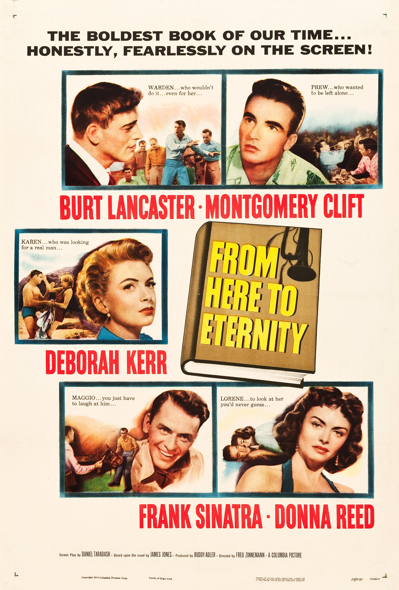

From Here to Eternity
26th Academy Awards
(Oscars 1954)
13 Nominations, 8 Awards
| Nominations | ||
|---|---|---|
| Category | Nominees | Result |
| Best Motion Picture | Buddy Adler | Won |
| Actor | Burt Lancaster | Nominated |
| Actor | Montgomery Clift | Nominated |
| Actress | Deborah Kerr | Nominated |
| Actor in a Supporting Role | Frank Sinatra | Won |
| Actress in a Supporting Role | Donna Reed | Won |
| Directing | Fred Zinnemann | Won |
| Writing (Screenplay) | Daniel Taradash | Won |
| Cinematography (Black-and-White) | Burnett Guffey | Won |
| Film Editing | William Lyon | Won |
| Costume Design (Black-and-White) | Jean Louis | Nominated |
| Sound Recording | John P. Livadary | Won |
| Music (Music Score of a Dramatic or Comedy Picture) | George Duning and Morris Stoloff | Nominated |